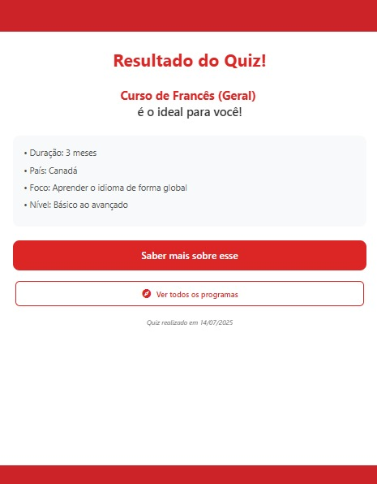
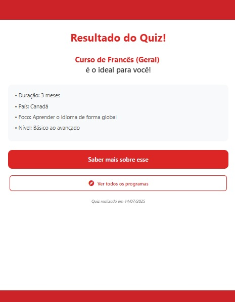

Retrospectiva do projeto
Visão do Produto
Durante toda a execução do projeto CanadaWay, a visão de produto permaneceu estável e alinhada com os objetivos iniciais. O problema identificado desde o início — a dificuldade enfrentada por potenciais intercambistas em encontrar informações confiáveis, simular custos e tomar decisões informadas — continuou sendo o foco principal do desenvolvimento.
O propósito do CanadaWay sempre foi melhorar a experiência do usuário na jornada de planejamento e contratação de um intercâmbio. Isso se traduz em funcionalidades voltadas à autonomia do usuário, personalização da experiência, e suporte contínuo antes e durante o processo de mobilidade.
Os objetivos estratégicos definidos inicialmente também permaneceram os mesmos:
- Aumentar a captação de clientes por meio de uma plataforma interativa e acessível;
- Reduzir a sobrecarga de atendimentos repetitivos com funcionalidades autoexplicativas e simuladores inteligentes;
- Oferecer apoio prático e informativo aos intercambistas durante todo o processo.
A consistência dessa visão permitiu que todas as decisões de projeto fossem direcionadas com clareza, garantindo foco, coesão e alinhamento com os usuários e stakeholders.
Proposta de solução
A proposta de solução inicial do projeto CanadaWay foi mantida em sua essência: desenvolver uma plataforma digital que auxilie potenciais intercambistas na tomada de decisão, com base em perfis personalizados, simulações de orçamento e acesso a informações relevantes.
Contudo, ao longo do desenvolvimento, alguns ajustes foram realizados, com o objetivo de manter o foco na experiência do usuário e na viabilidade técnica da entrega:
-
Remoção dos filtros avançados e do chatbot: essas funcionalidades estavam previstas inicialmente, mas foram retiradas com base em validação direta com o cliente. A análise identificou que os filtros tornariam a interface excessivamente complexa, e o chatbot exigiria um esforço técnico desproporcional ao valor entregue nesta fase do projeto. Ambas as decisões foram consensuais e registradas.
-
Adição do Prisma ORM: para a camada de persistência de dados, foi integrada a ferramenta PrismaORM, que otimizou o acesso ao banco de dados e melhorou a manutenção e escalabilidade da aplicação. Essa alteração técnica foi decidida em conjunto com a equipe de desenvolvimento, visando maior robustez no backend e agilidade nas iterações.
Essas mudanças foram implementadas sem comprometer os objetivos centrais do projeto, mas sim refinando a proposta de solução com base em validação contínua e foco na entrega de valor dentro dos recursos disponíveis.
Eng. de Software
A abordagem escolhida por nós foi a Ágil, o ciclo de vida escolhido foi o Iterativo e Incremental e o processo foi o RAD isolado (Rapid Application Development). Abaixo segue como foi implementado o método de engenharia de software escolhido ao longo do projeto e o que não foi.
Versões do protótipo

O Histórico de versões do protótipo é uma forma de verificar que o ciclo de vida Iterativa e Incremental foi implementada.
Registros das reuniões por ciclos


Os Registros de reuniões e mensagens de organização dos ciclos é uma forma de verificar que a abordagem Ágil foi implementada.
Protótipo Final


O Protótipo final e sua validação com o stakeholder é uma forma de verificar que o processo RAD foi implementado.
Eng. de Requisitos
Durante a execução do projeto CanadaWay, a equipe aplicou de forma consistente todas as principais atividades e técnicas de Engenharia de Requisitos (ER), alinhadas à abordagem iterativa e incremental do processo RAD (Rapid Application Development).
A ER foi conduzida como um processo contínuo e integrado entre as fases, permitindo revisões, validações e ajustes com base em feedbacks reais, o que foi essencial para garantir que as funcionalidades desenvolvidas estivessem alinhadas às necessidades dos usuários e do cliente.
Atividades implementadas com sucesso:
- Elicitação e Descoberta: Foram realizadas entrevistas, brainstormings e análises de concorrentes e documentos para levantar requisitos reais e relevantes.


-
Análise e Consenso: Os requisitos passaram por momentos de discussão e alinhamento, onde restrições, prioridades e possíveis ambiguidades foram tratadas de forma colaborativa.
-
Declaração e Representação: A documentação foi organizada por meio de histórias de usuário, critérios de aceitação e PBB, além da produção de protótipos funcionais que ajudaram a tangibilizar as funcionalidades.


-
Verificação e Validação: Os requisitos foram constantemente revisados e validados com o cliente por meio de testes de usabilidade, feedbacks diretos e sessões iterativas de avaliação dos protótipos.
-
Organização e Atualização: Utilizamos técnicas como a priorização MoSCoW, atualização contínua do backlog, rastreamento das user stories e planejamento incremental com base nas validações. Após a implantação, o feedback do usuário também foi considerado para pensar em evoluções futuras.

Integração com o RAD
Todo esse processo de Engenharia de Requisitos foi conduzido de forma integrada ao ciclo RAD, permitindo que os requisitos evoluíssem junto com os protótipos e validações. A equipe conseguiu responder às mudanças com agilidade, mantendo a visão do produto e garantindo que o escopo do MVP fosse cumprido com qualidade.
Cronograma
Durante o desenvolvimento do projeto CanadaWay, o cronograma passou por alguns ajustes importantes que refletiram a realidade prática enfrentada pela equipe.
Inicialmente, o planejamento seguia uma divisão por disciplinas (Requisitos, User Design, Construção e Implantação), com entregas semanais bem definidas e metas específicas por iteração. No entanto, ao longo do processo, alguns fatores impactaram diretamente a execução das atividades conforme planejado:
- Demandas externas relacionadas às entregas das unidades da disciplina interferiram no ritmo de execução técnica, exigindo pausas ou redistribuições internas de tarefas.
- Problemas com infraestrutura – como instabilidades nas máquinas utilizadas – comprometeram a produtividade de parte da equipe em momentos críticos.
- Conflitos de agenda e indisponibilidade de alguns membros afetaram a fluidez de etapas que dependiam de colaboração coletiva, especialmente durante a prototipação e construção.
Como resposta, a equipe realizou uma reorganização do cronograma a partir da fase de construção, concentrando esforços em etapas mais críticas e adaptando as sprints para refletirem melhor a disponibilidade e o contexto real do time.
Mesmo com os ajustes, o projeto conseguiu manter a entrega dos principais requisitos funcionais previstos, reforçando a importância de flexibilidade e adaptação em processos iterativos, como os propostos pelo RAD.
Essas mudanças foram essenciais para garantir a conclusão do projeto com qualidade e dentro do prazo final estabelecido.
Comunicação
Ao longo do desenvolvimento do projeto CanadaWay, a comunicação da equipe se deu de forma majoritariamente assíncrona, adaptando-se à disponibilidade de cada integrante. Algumas ferramentas inicialmente planejadas não foram utilizadas conforme o esperado, enquanto outras se mostraram mais adequadas ao nosso fluxo real de trabalho.
-
Embora o Figma estivesse previsto como centralizador de decisões de design e prototipação, na prática sua utilização foi bem limitada a prototipação. Algumas partes das atividades passadas pelo professor foram conduzidas através do Miro, que se mostrou mais ágil para dinâmicas de ideação, mapeamento e alinhamento rápido.
-
Para a validação dos critérios de aceitação, adotamos o GitHub Projects como ferramenta de gerenciamento. Apesar do uso não ter sido constante em todos os momentos, ele permitiu que a gente se organizasse para finalizar nossas entregas.
-
Um ponto crítico foi a falta de regularidade nas reuniões de acompanhamento. Embora o cronograma previsse encontros semanais, nem sempre conseguimos manter essa cadência, principalmente por falta de tempo, conflitos de agenda e, em certos momentos, baixo engajamento da equipe. Isso impactou negativamente a fluidez da comunicação e o alinhamento em alguns ciclos.
Apesar dessas limitações, a equipe se esforçou para manter a troca de informações ativa por meio de canais alternativos, como mensagens diretas e compartilhamento de arquivos. Esse cenário evidencia a importância de definir canais claros, manter consistência nas reuniões e reforçar o compromisso coletivo, especialmente em projetos de curta duração com alto grau de colaboração.
Como lição, reconhecemos a necessidade de melhorar a disciplina na comunicação e garantir espaços regulares para alinhamento, mesmo em semanas de maior sobrecarga.
Requisitos Funcionais e Não Funcionais
Mudanças dos requisitos funcionais
A lista original de requisitos foi alterada a pedido do professor e com auxilio do mesmo. Abaixo temos a primeira versão dos requisitos.


| Tipo de Mudança | Quantidade Aproximada | Exemplos |
|---|---|---|
| Mantidos (sem alterações) | ~22 | RF01–RF11, RF13–RF15, RF19–RF27 |
| Ajustados ou Refinados | ~6 | RF12 (chatbot → FAQ), RF16–RF18 reorganizados |
| Adicionados | ~5 | RF30–RF32 (cadastros/exclusões extras) |
| Removidos ou Fundidos | ~2 | RF12 (chatbot removido), RF18 (notícias) |
| Código | Situação | Mudanças Observadas |
|---|---|---|
| RNF01 | Refinado | Detalhado com critérios de usabilidade, largura de tela, navegadores e dispositivos |
| RNF02 | Refinado | Especificação de dados sensíveis e reforço da conformidade com LGPD |
| RNF03 | Refinado | Adição de exigência de desempenho mesmo em horários de pico |
| RNF04 | Melhorado | Capacidade de 500 usuários simultâneos e compatibilidade técnica ampliada |


DoR e DoD
Durante o projeto CanadaWay, adotamos a Definition of Ready (DoR) e a Definition of Done (DoD) como instrumentos para garantir clareza, alinhamento e qualidade nas funcionalidades desenvolvidas. Apesar da intenção e da estrutura bem definida, nem todos os critérios previstos puderam ser plenamente aplicados na prática.
Pontos não atendidos da DoR
Um dos principais critérios que não foi implementado de forma consistente foi:
- [ ] As regras de negócio descritas em formato BDD (Given-When-Then):
Embora previsto, o uso de cenários de comportamento no formato Behavior Driven Development (BDD) não foi aplicado na elaboração das User Stories. Faltou tempo e maturidade técnica da equipe para formalizar os comportamentos esperados com esse grau de detalhamento durante a criação das nossas US's. Não detalhamos e nem listamos as regras de negócio, elas foram apenas discutidas oralmente.
Pontos não atendidos da DoD
Devido a atrasos no cronograma e a priorização de entregas funcionais mínimas, nem todos os critérios da DoD foram cumpridos, em especial:
-
[ ] Realização de testes funcionais (manuais ou automatizados):
Apesar da implementação de várias funcionalidades, a equipe não conseguiu aplicar testes adequados nas telas, seja por falta de tempo ou por limitações na estrutura técnica disponível. Isso resultou em validações mais superficiais, sem um processo de testes formalizado. -
[ ] Revisão de código sistemática:
A etapa de code review não foi realizada com frequência. Em muitos casos, os membros da equipe integraram suas funcionalidades diretamente, sem validação cruzada.
Como aprendizado, fica a importância de planejar melhor o tempo para testes e revisões, e de incorporar práticas como o BDD desde o início das sprints, garantindo uma entrega mais robusta e validada.
MVP
O escopo do MVP definido no início do projeto CanadaWay foi mantido ao longo de toda a execução. As funcionalidades essenciais previstas — como o cadastro de usuários, simulação de programas, quizzes e visualização de recomendações — foram priorizadas e entregues conforme planejado.
No entanto, à medida que o desenvolvimento avançava, a equipe identificou a necessidade de incluir algumas telas complementares que, embora não fizessem parte do MVP original, foram implementadas para garantir maior linearidade, coerência na navegação e melhor experiência do usuário final.
Essas adições não alteraram o escopo central do MVP, mas sim o refinaram no aspecto de usabilidade e fluxo, contribuindo para um produto mais consistente e próximo de um cenário real de uso.
Essa decisão foi tomada de forma consciente e alinhada com a proposta do RAD, que permite adaptações contínuas baseadas no uso prático e validação com o cliente.
US's e APK
- US01 - Como usuário da plataforma, quero fazer login com minhas credenciais para acessar meu ambiente personalizado


Checklist – Critérios de Aceitação
- [X] O sistema deve validar se o e-mail inserido está em um formato válido (ex: usuario@dominio.com).
- [X] O sistema deve impedir o envio do formulário se algum dos campos estiver em branco.
- [X] O sistema deve autenticar o usuário corretamente quando e-mail e senha forem válidos.
- [X] O sistema deve redirecionar o usuário autenticado para seu ambiente personalizado.
- [X] O sistema deve exibir uma mensagem de erro clara caso o e-mail não esteja cadastrado ou a senha esteja incorreta (ex: "E-mail ou senha inválidos").
- [X] O sistema deve armazenar e comparar senhas de forma segura, utilizando hash.
- [X] O sistema deve manter a sessão do usuário ativa após o login, até que ele se deslogue ou a sessão expire.
- [X] O sistema deve garantir que apenas usuários autenticados possam acessar páginas protegidas da plataforma.
- US02 - Como potencial intercambista, quero me registrar preenchendo meus dados básicos (nome, sobrenome, email, telefone com DDD, cidade, qual a unidade mais próxima do usuário, senha, confirmar senha) para criar uma conta na plataforma

Checklist – Critérios de Aceitação
- [X] O sistema deve exibir um formulário de registro que deve conter os seguintes campos: nome, sobrenome, e-mail, telefone com DDD, cidade, unidade mais próxima (seleção a partir de uma lista), senha, confirmar senha, campo com checkbox de "Eu li e concordo em receber notificações e demais informativos da Canada Intercambio de acordo com as políticas de privacidade"
- [X] O sistema deve validar se o campo de e-mail está em um formato váldio (ex: nome@dominio.com)
- [X] O sistema deve exibir mensagem clara se e o o e-mail estiver em uso.
- [X] O sistema deve validar se o telefone tem apenas números, com DDD, e tem comprimento mínimo adequado (11 dígitos).
- [X] O sistema deve validar se a senha tem no mínimo 6 caracteres.
- [X] O sistema deve validar se o campo "Confirmar senha" é igual ao campo "Senha".
- [X] O sistema requerir, obrigatoriamente, que o usuário selecione uma unidade da lista de unidades cadastradas no sistema.
- [X] O sistema deve exibir mensagens de erro claras caso o usuário tente enviar o formulário com dados inválidos ou campos em branco.
- [X] Ao preencher corretamente o formulário, o usuário deve ser registrado com sucesso.
- [X] O usuário deve ser redirecionado para o quiz inicial.
- US03 - Como usuário, quero editar meu perfil na plataforma para manter minhas informações atualizadas

Checklist – Critérios de Aceitação
- [X] O sistema deve permitir que o usuário acesse uma página ou seção de edição de perfil após o login.
- [X] O sistema deve exibir os dados atuais do usuário previamente preenchidos nos campos editáveis (nome, sobrenome, telefone, cidade e unidade mais próxima).
- [X] O sistema deve permitir que o usuário edite e salve alterações nos campos permitidos.
- [X] O sistema deve validar os campos editados (ex: formato de e-mail, telefone com DDD, campos obrigatórios).
- [X] O sistema deve persistir as alterações no banco de dados.
- [X] O sistema deve manter a integridade da sessão após a edição do perfil.
- US05 - Como potencial intercambista, quero responder um teste para identificar o perfil ideal de intercâmbio com base nas respostas
 

Checklist – Critérios de Aceitação
- [X] O sistema deve exibir um teste com as seguintes 6 perguntas( Qual a sua idade?, O que você busca no intercâmbio?, Qual o máximo de tempo que você tem disponível?, Você prefere viajar sozinho ou acompanhado?, Qual o seu nível de inglês?, Qual a sua faixa de orçamento?)
- [X] O sistema deve apresentar alternativas pré-definidas para cada pergunta em botões.
- [X] O sistema só deve permitir a submissão das respostas se todas as perguntas estiverem respondidas
- [X] O sistema deve processar as respostas e sugerir um perfil de intercâmbio ideal com base nos padrões definidos pelos steakholder.
- [X] O sistema deve persistir as respostas no banco de dados associadas ao usuário.
- US06 - Como potencial intercambista, quero navegar por programas

Checklist – Critérios de Aceitação
- [X] O sistema deve listar os principais programas disponíveis.
- [X] Cada card de programa deve conter( Nome do programa (em destaque), Descrição resumida, Não deve mostrar o Preço (formato: R$ valor,00), Duração (em meses), País de destino, Imagem ilustrativa do destino ou do programa)
- [X] O sistema deve permitir clicar no nome ou no card do programa para abrir uma página com mais detalhes.
- US07 - Como potencial intercambista, quero responder um quiz específico sobre os programas da Canada Intercambio para verificar o entendimento sobre as opções disponíveis


Checklist – Critérios de Aceitação
- [X] O sistema deve disponibilizar um quiz com perguntas específicas sobre os programas oferecidos pela Canada Intercâmbio.
- [X] O sistema deve apresentar alternativas de resposta para cada pergunta em botões
- [X] O sistema só deve prosseguir para a próxima pergunta quando a atual estiver respondida
- [] O sistema deve processar e exibir o resultado do quiz ao final, indicando o desempenho do usuário.
- [] O sistema deve armazenar o resultado do quiz no perfil do usuário, se ele estiver autenticado.
- [X] O sistema deve permitir que o quiz seja refeito posteriormente.
- [] O sistema deve liberar o atendimento com a Canada Intercambio quando o resultado do quiz for maior ou igual a 60%
- US10 - Como potencial intercambista, quero visualizar sugestão de programa com base nas respostas dos quizzes e testes
Checklist – Critérios de Aceitação
- [X] O sistema deve exibir uma seção no topo da página chamada “Programas recomendados para você”.
- [] O sistema deve preencher essa seção com base nas respostas fornecidas nos testes e quizzes feitos pelo usuário.
- [X] Cada programa recomendado deve ser exibido em um card contendo( Imagem ilustrativa do programa ou país, Nome do programa (em destaque), Descrição curta do programa, Não deve exibir o valor Valor do programa, País e duração (ex: “Canadá • 20 meses”))
- [X] O sistema deve permitir que o usuário clique no nome ou no card para acessar uma página com mais detalhes do programa.
- US12 - Como potencial intercambista, quero visualizar respostas para dúvidas frequentes

Checklist – Critérios de Aceitação
- [X] O sistema deve exibir uma lista de perguntas frequentes.
- [X] O sistema deve permitir que o usuário clique em uma pergunta para ver a resposta.
- [X] O sistema deve exibir as respostas com texto claro e objetivo.
- [X] O sistema deve permitir abrir e fechar perguntas.
- US14 - Como potencial intercambista, quero visualizar informações detalhadas de cada programa (duração, país, valor, requisitos)

Checklist – Critérios de Aceitação
- [X] O sistema deve exibir uma imagem ilustrativa no topo da página do programa.
- [] O sistema não deve exibir o valor total do programa
- [X] O sistema deve exibir a duração e o país do programa (ex: 20 meses • Canadá).
- [X] O sistema deve exibir uma descrição curta do programa.
- [X] O sistema deve exibir as seguintes informações gerais( Foco, Método, Tipo, Carga horária, Nível de idioma exigido)
- [X] O sistema deve exibir os requisitos do programa (ex: graduação, fluência, etc.).
- [X] O sistema deve carregar os dados dinamicamente com base no programa selecionado.
- US15 - Como potencial intercambista, quero solicitar contato com um especialista da Canada Intercambio

Checklist – Critérios de Aceitação
- [X] O sistema deve exibir um botão ou link com o texto “Contate-nos”.
- [X] O link deve abrir uma conversa direta no WhatsApp com número da unidade mais perto dele.
- [X] O link deve incluir uma mensagem pré-definida (ex: "Olá, vim pelo app e gostaria de saber mais sobre os programas de intercâmbio.").
- US19 - Como empresa, quero criar conta preenchendo dados básicos (nome, sobrenome, email corporativo, senha, confirmar senha, número, função, filial)

Checklist – Critérios de Aceitação
- [X] O sistema deve exibir um formulário de cadastro com os seguintes campos obrigatórios( Nome, Sobrenome, E-mail corporativo, Número de telefone, Função na empresa, Filial, Senha, Confirmar senha)
- [X] O sistema deve validar o formato do e-mail (ex: nome@empresa.com).
- [X] O sistema deve validar o telefone com DDD.
- [X] O sistema deve validar que os campos "senha" e "confirmar senha" são iguais.
- [X] O sistema deve exigir senha com no mínimo 6 caracteres.
- [X] O sistema deve exibir mensagem de erro clara caso algum campo esteja inválido.
- [X] O sistema deve impedir o cadastro com e-mail já existente.
- [X] O sistema deve salvar os dados corretamente no banco de dados.
- US29 - Como empresa, quero atualizar informações de programas existentes

Checklist – Critérios de Aceitação
- [X] O sistema deve exibir um botão de edição na página de detalhes do programa apenas para admins do sistema
- [X] O sistema deve exibir o formulário de edição com os dados atuais do programa previamente preenchidos.
- [X] O sistema deve permitir alterar os seguintes campos( Nome do programa, Descrição, País, Duração, Tipo, foco, método e carga horária, Requisitos e nível de idioma)
- [X] O sistema deve validar os campos obrigatórios e impedir o envio com dados inválidos.
- [X] O sistema deve exibir mensagem de sucesso ao salvar as alterações (ex: “Programa atualizado com sucesso”).
- [X] O sistema deve exibir mensagem de erro clara em caso de falha.
- [X] O sistema deve salvar as alterações no banco de dados e atualizar as exibições públicas do programa.
- US30 - Como empresa, quero cadastrar novos programas de intercâmbio

Checklist – Critérios de Aceitação
- [X] O sistema deve permitir que usuários autenticados com perfil de empresa acessem a página de cadastro de programa.
- [X] O sistema deve exibir um formulário com os seguintes campos obrigatórios( Nome do programa, Descrição resumida, País, Duração (em meses), Valor total (em R$), Tipo de programa (ex: graduação, trabalho, voluntariado, etc.), Carga horária (ex: integral, parcial), Nível de idioma exigido, Foco do programa, Método (ex: aulas, pesquisa, prática), Requisitos (ex: graduação completa, inglês fluente), Imagem ilustrativa)
- [X] O sistema deve validar os campos obrigatórios antes de permitir o envio.
- [X] O sistema deve exibir mensagem de erro clara em caso de dados inválidos.
- [X] O sistema deve salvar os dados no banco de dados e disponibilizá-los para exibição pública.
FeedBack do Cliente
Abaixo está o vídeo de feedback do cliente para a última versão apresetnada por nós:
*Nota: Caso o vídeo não carregue, você pode assistir diretamente pelo YouTube.